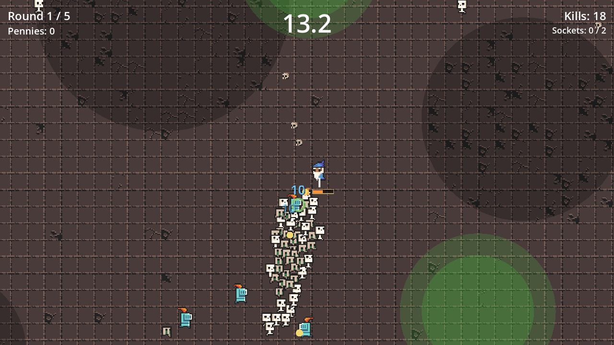
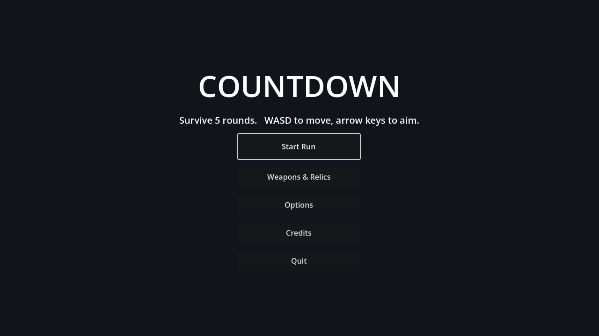

Game jam · July 2026 · theme: countdown
Countdown
A round-based survive-the-countdown action roguelite. Outlast five escalating rounds, build a loadout between them, and try not to let either clock reach zero.

The hook
Two clocks run at once
The round timer at the top is how long you have to last. The vitality vessel at the bottom is whether you'll last it — it drains continuously, faster every round, and the only thing that refills it is collecting the time orbs your kills drop.
You clear a round by being above zero when the timer hits 0:00. Standing still and turtling doesn't work: if you aren't killing, you aren't refilling. That one rule turns move speed and pickup radius into survival stats rather than conveniences.
The build layer
Weapons carry traits
Every weapon has a School — arcane, ember, frost, storm, holy, void, steel — and one or two Forms: bolt, spread, beam, chain, orbit, sweep, thrust, heavy, rapid, homing, blast.
Relics resonate
Relics modify the run and react to matching weapon traits. Stack a School and its relic detonates. A few of them read the countdown clock itself as a build resource.
Fusions
Own a weapon plus its catalyst relic and survive a round holding both, and the two fuse into an upgraded weapon — consuming the relic.
A capped loadout
Five weapons, five relics. Once you're full, every acquisition is a deliberate swap, so late-round shopping is a real decision.
Budgeted swarms
Enemies don't drip in on a timer. A spawn director accrues a threat budget each round and spends it on packs arranged in shapes — scatter, arc, flank, surround — with a chance of stat-scaled elites.
Endless mode
Win the five-round run, or opt into Endless and see how far the scaling carries you.
Controls
Everything is on the keyboard
Weapons fire on their own along your facing — there's no attack button. Between rounds you spend Pennies dropped by enemies in the shop.
Screens

Built with
Godot 4.7 and GDScript
Gameplay is decoupled through an event bus, and content — weapons, enemies, relics, wave pacing — is data-driven with Godot resources, so tuning a run is editing data rather than code. The web build is the same project exported to WebAssembly.
All third-party art and audio is CC0 or MIT. Full per-asset attribution ships inside the game itself, under Credits on the title screen.